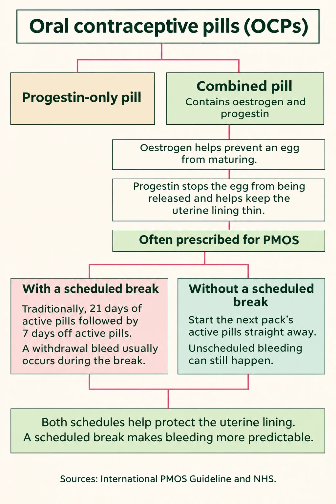
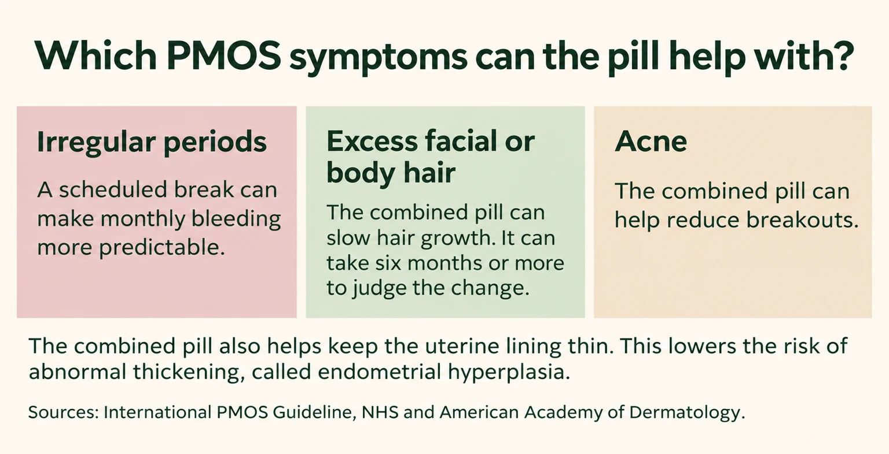

In short
The combined oral contraceptive pill (OCP) is often prescribed for PMOS (previously called PCOS) to manage irregular periods, excess facial and body hair, and acne. It also helps keep the uterine lining thin. It doesn’t cure PMOS, so your symptoms may return after you stop taking it. It doesn’t reduce your long-term fertility. [1] [2]
You’re 19. Your periods have been coming months apart. You’ve been feeling tired, and lately you’ve noticed more hair on your chin. So you book an appointment with a gynecologist.
Your doctor talks to you about hormonal issues and prescribes the birth control pill. You leave with a prescription, a lot of questions, and very few answers. The biggest one hits you on your way home. Why am I taking birth control for my period?
Then come the other questions. Will it help with the hair on my chin, too? Could it affect my mood? It’s a hormonal pill, so what else might it affect? Could it affect my fertility? What happens if I stop taking it?
The combined hormonal pill (CHP) contains two hormones, oestrogen and progestin. It’s one type of oral contraceptive pill. It’s used to prevent pregnancy and can also help manage some PMOS symptoms. We’ll look at how it works, which symptoms it may help with, what side effects you might notice, and what to expect if you stop taking it.
Why is the combined OCP prescribed for PMOS (PCOS)?
Oral contraceptive pills (OCPs) come in two main types. The combined pill contains oestrogen and progestin, and the progestin-only pill contains progestin alone. [1] [2]
How it works. The two hormones in the CHP work together to stop ovulation. Oestrogen helps prevent an egg from maturing, and progestin stops the ovary from releasing it. Progestin also limits the growth of the uterine lining, which can build up when you go months without ovulating. If the lining stays too thick over time, the risk of abnormal overgrowth and cancer of the uterine lining increases, though the overall chance of developing that cancer is low. [1] [4] [9]
The combined hormonal pill can be prescribed with a scheduled break or without one. Both help keep the uterine lining thin. The difference is how predictable your bleeding is. [3]
With a scheduled break. On the traditional schedule, you take one active pill each day for 21 days, followed by seven days off active pills. The drop in hormones during the break usually triggers a withdrawal bleed. When people say it’s “not a true period,” they mean the drop in the pill’s hormones triggers the bleed. This schedule helps regulate when you bleed, making it more predictable and easier to plan around. [3] [4]
Without a scheduled break. With a suitable pill, you go straight from the last active pill in one pack to the first active pill in the next. There’s no scheduled bleed, though spotting or unexpected bleeding can still happen. [3] [4]
With or without a scheduled bleed, progestin helps keep the uterine lining thin. [4] [9]


Which PMOS (PCOS) symptoms can the pill help with?
Will it help with the hair on my chin, too? It can. The combined OCP can help with three PMOS symptoms: irregular periods, excess facial or body hair, and acne. [1] [3] [6] [10]
- Irregular periods. A scheduled break can make bleeding more predictable.
- Excess facial or body hair. The CHP lowers the amount of testosterone available to act on your hair follicles. Over time, that can slow excess hair growth, though it can take six months or more to judge the change. [5] [10]
- Acne. With less testosterone acting on your skin, the pill can help reduce breakouts. [5] [6]


What side effects might I notice on the combined OCP?
The hormones in the pill change how the lining of your uterus grows, so you may notice some spotting in the first few months as the lining adjusts. The drop in hormones during a scheduled break can also trigger headaches in some people. [4] [7]
Could it affect my mood? Some people report mood changes while taking the pill, but researchers haven’t established a clear, consistent causal link. [4] [7] If you notice a change that bothers you, tell your gynecologist when it started and how it’s affecting you. If you’ve been feeling low since you started the pill, that’s worth bringing up. You can discuss whether a different pill or another approach would suit you better. [7]
You may have heard that the pill can cause blood clots. How common is that? The combined OCP carries a very small risk of a blood clot in a vein. Over one year, the estimated risk is 0.05% to 0.12%, depending on the formulation. Your medical history helps your gynecologist decide whether it’s a suitable option for you. [7] [8]
What happens if I stop taking the pill?
Will my symptoms come back? They may. The pill doesn’t cure PMOS. It helps manage certain symptoms while you take it. After you stop, your periods may become irregular again, and acne or excess facial or body hair may return. [1] [2]
Will taking the pill make it harder to get pregnant later? The combined OCP doesn’t reduce your long-term fertility. PMOS can make it harder to conceive because it can make ovulation less frequent or less predictable. You may only notice this once you stop the pill and start trying to get pregnant. The timing can make it seem like the pill caused the difficulty, when PMOS may be affecting how often you ovulate. [1] [2]
In conclusion
Back to the question from the beginning of this article. Why am I taking the birth control pill for my period? Now you have a better idea of why the pill was offered. It doesn’t cure PMOS. It can help manage some symptoms while you take it, and that can be a huge relief. [1]
You can and should ask your doctor what they expect the pill to do for you. At your next appointment, you might ask:
- Which of my symptoms will the pill help with, and which ones won’t it help with?
- What side effects can I expect?
- How will we know if it’s working?
- What are my options if it doesn’t feel right for me?
You booked that appointment because you wanted relief from your symptoms. You deserve that relief, along with a clear understanding of what may be causing your symptoms and what the pill is meant to help with.
Sources
- International evidence-based PMOS guideline
- NHS · What is the combined pill?
- NHS · How to take the combined pill
- FSRH · Combined hormonal contraception guideline
- Endocrine Society · PCOS clinical practice guideline
- American Academy of Dermatology · Acne guideline
- NHS · Side effects and risks of the combined pill
- European Medicines Agency · Combined hormonal contraceptives and clot risk
- Indian consensus statement · Oral contraceptive pills in PCOS
- Endocrine Society · Hirsutism guideline